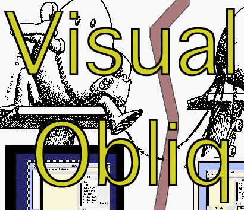

Visual Obliq Home Page

Project Description
The aim of the Visual Obliq project is to make building distributed multi-user applications
as easy as building user applications using a conventional
application builder.
The Visual Obliq programming environment environment consists of an interactive application builder, and a runtime
system for distribution. The application builder is an integrated tool that allows distributed applications
to be designed, programmed (in the language Obliq), and executed from within it. The runtime system is
responsible for connecting new users to sessions, and transmitting code to their site when they join.
Recently we added support for embedding Visual Obliq applications in the WWW, and for the
dynamic migration of applications to new sites.
Most of the work was done while Krishna Bharat was a research intern at Digital, Systems Research Center,
during the summers of '93 and '94.
Documentation
 Visual Obliq
Visual Obliq
- Visual Obliq (Video)
- The Obliq Programming Language
Embedding Visual Obliq Applications in WWW
Migratory Interactive Applications in Visual Obliq
Availability
Visual Obliq is included in the current
Digital SRC, Modula-3 Distribution.
Members
 Marc H. Brown, Digital, Systems Research Center
Marc H. Brown, Digital, Systems Research Center
-
Luca Cardelli, Digital, Systems Research Center
-
Krishna Bharat, Graphics, Visualization and Usability Lab, Georgia Tech
Copyright © 1995 Krishna Bharat - All rights reserved.